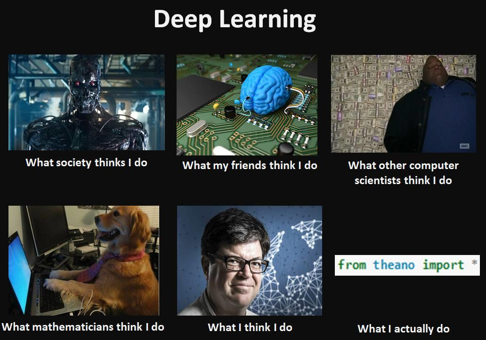

Hello World
CodeTengu Weekly 碼天狗週刊
CodeTengu Weekly 會在 GMT+8 時區的每個禮拜一早上 10:00 出刊，每一期會從目前的 curator 名單中選出三位來負責當期的內容，每一位 curator 各自負責不同的領域，如果你在這一期沒有看到自已感興趣的東西，說不定下一期就會有了。
你也可以瀏覽一下前幾期的內容，有價值的東西是不會過時的。
以下是目前的 curator 陣容：
- @vinta - I failed the Turing Test - 無法通過圖靈測試的程序員
- @saiday - Imnotyourson - 捷運飲食推廣委員會
- @tzangms - Oceanic / 人生海海 - 衝動型購物
- @fukuball - ImFukuball
- @wancw - 一直被問要不要寫 Android App 的後端工程師
- @adamp33 - 看棒球才是正職，副業是前端工程師
- @kako0507 - 熱愛嘗試新事物的前端工程師
- @chiahsien - Nelson
- @mingderwang
大家也可以 follow 一下 CodeTengu 的 Facebook、Twitter 或 GitHub，有很多 Weekly 看不到的內容。有任何建議或疑問也可以來 Gitter 聊一聊，歡迎亂入 👺
 @vinta
@vinta
What is a metaclass in Python?
這個 Stack Overflow 上的回答非常清楚明瞭地解說了什麼是 Python 裡的 metaclass。他提到 type() 就是一個 metaclass，是的，就是那個你平常用來做類型檢查的 type()，雖然其實你應該用 isinstance()。
像是 Django Models 就用了不少 metaclass 的技巧，如果你想知道 metaclass 還有哪些使用情境的話，可以看看 What are your (concrete) use-cases for metaclasses in Python?。
Celery: Designing Workflows
使用 Python 從事 web 開發的人，對 Celery 這個用來做 asynchronous task queue 的工具一定都不陌生，在公司的和我自己的大大小小的專案裡幾乎都有用到 Celery。
不過除了最基本的 @task() 的用法之外，Celery 其實還有一些非常實用的 methods，例如 chord() 可以在一批 celery task 通通都執行完之後再呼叫某個 callback function，而 chunks() 能夠方便地把一個很大的 list 切成一段一段再餵進 celery task。
延伸閱讀：
vinta/pangu.js
我上禮拜把我的一個原本只能在瀏覽器執行的 JavaScript library 用 ES6 改寫，變成能夠同時支援 Node.js 和 Browser 兩種環境（就是所謂的 Isomorphic JavaScript，最近的熱詞），順便摸了一圈目前 JavaScript 生態系裡主流的工具鏈，包括：
- Tern - a code-analysis engine (intelligent code completion)
- ESLint - a linter
- Babel - a source-to-source compiler (transpiler)
- Webpack - a module bundler
- Karma - a test runner
- Mocha - a test framework
- Chai - a test assertion library
也捨棄了 Grunt，直接用 npm run 來當 task runner。
作為一個 Web backend developer（還恬不知恥地自稱 DevOps），好一陣子沒有認真寫 JavaScript 了，雖然之前一直有耳聞寫 JS 的人都是一些喪心病狂的傢伙，但是等到自己跳下去寫了才發現，原來傳聞都是真的啊幹，單單要 init 一個專案就不知道要搞多少東西，對新手非常不友善啊！這真的不是好現象。
我要說的是，因為 pangu.js 整個專案的架構相對單純。除了上面提到的東西之外，也整合了 Travis CI 和發布到 npm，甚至還提交到 cdnjs 了。以一個「現代的 JavaScript 專案」來說，該有的東西都有了。所以，如果你跟我一樣也是最近才開始接觸 ECMAScript 6 和 Node.js，需要一個簡潔但是完整的 starter kit 的話，或許可以參考一下這個專案：pangu.js。
Airbnb JavaScript Style Guide
所有的 JavaScript Style Guide 裡面，Airbnb 的這一份應該是最權威的了，除了有 ES5 和 ES6 兩個版本之外，更棒的是他們還特地寫了一個 ESLint 的外掛：eslint-config-airbnb，不需要自己配置 .eslintrc 了，非常建議大家試試。
延伸閱讀：
Short read: How is HTTP/2 different? Should we still minify and concatenate?
前陣子在我們 team 的 SysAdmin 的努力之下，StreetVoice 終於加上了 Varnish Cache 還順便全站 HTTPS 了，下一步就是 HTTP/2 啦！畢竟 NGINX 和 CloudFlare 也都已經正式支援 HTTP/2 了啊。
前幾天正好看到這篇文章，簡單扼要地說明了 HTTP/2 跟現在主流的 HTTP/1.1 有什麼不同，大家可以看一下。
P.S. 值得一提的是 Scale Your Code 這個網站，上面有很多作者訪問一些業界大神的 podcast 節目可以聽。
 @fukuball
@fukuball

Evaluation of Deep Learning Toolkits
Deep Learning 大概是目前最火紅的機器學習演算法，舉凡 Siri 的語音辨識、Google 的自動駕駛技術都有使用到 Deep Learning。要學習一項技術最好的方法就是先跳下去用它，除非學這項技術會有生命危險，還好寫程式不會有生命危險（過勞死除外）。所以就讓我們直接跳下去使用 Deep Learning 吧！
結果一跳下去找 Deep Learning 的相關資源，就發現有 Caffe、CNTK、TensorFlow、Theano 及 Torch 等深度學習框架可以使用，到底要挑哪個呢？本篇作者為每個深度學習框架各方面的優勢做了一些評析，挑個喜歡的來玩玩看吧！
Python Numpy Tutorial - Python Numpy 快速上手
自從脫離研究所之後，就沒有再碰 Numpy，一直到 Google 開源了 TensorFlow 這個深度學習框架，才再去找了些相關資源來溫習一下 Numpy。
這個來自史丹佛大學的類神經網絡機器課程提供了一個 Python Numpy Tutorial，非常適合沒有寫過 Numpy 的人作為一個快速上手的學習資源，這個學習資源作者 Justin Johnson 的 Project 也都蠻有可看性的，提供給大家參考看看。
林軒田教授機器學習基石 Machine Learning Foundations 第九講學習筆記
前八講自從介紹了 PLA 這個演算法來解二元分類的問題之後，林軒田教授很詳細地講解了機器學習流程中每個部份的數學理論，讓我們了解到只要讓演算法在取樣資料裡面能夠得到好的效果，在未來做預測時也能夠得到差不多相近的結果，這就是機器學習。
第九講便開始介紹新的機器學習演算法，一樣使用核發信用卡這個例子，當我們想讓機器自動預測核發信用卡額度時，要讓機器從資料中學習回答出一個實數解，這樣的問題就是迴歸問題，我們可以用統計學上的迴歸運算來做到機器學習。迴歸這個機器學習演算法非常簡單，如果你會 numpy 的話，只要兩行程式就寫完了～
Child’s Play - Computers should stop trying to act like grown-ups
Alan Turing 曾經提出過，要做到真正的人工智慧，就要設計出像小孩一樣學習能力的機器。機器學習演算法發展至今一直是使用大量人為產生的資料來達到學習效果，也因為有了一點成效，所以目前的研究方向都是朝著這個方向走。這樣的機器學習方法跟小孩學習模式有什麼不同呢？我們可以用這個例子來說明：從一張沒看過的照片辨識這張照片是不是忍者龜的照片，使用 Deep Learning 可能需要透過大量人為產生的資料來做訓練，而小孩只要透過幾張樣本照片就可以快速學習了，小孩學習速度可見一斑！
在 Deep Learning 當道的機器學習研究領域，若有研究者可以讓機器有跟小孩一樣的學習速度的話，也許會對人工智慧帶來很大的變革吧！
PHP Development Evolution - PHP 變革史
PHP 7 與之前的 PHP 版本相比起來是一個非常大的變革，效能也因為這些變革而帶來了巨大的提升。本篇文章回顧了 PHP 語言從誕生至今的變革史，透過清楚明瞭的時間軸版面可以對 PHP 發展的過程一目了然，他們甚至把語言變革的過程視覺化做成影片了，大家可以感受一下。
 @wancw
@wancw
Top 20 Amazon and Google Programming Interview Questions
如同前幾期 Weekly 的刊頭文，我最近正好在物色新的工作機會。自然也就特別注意這類面試考題。剛好農曆年前後也是個換工作的常見時機，分享給有需要的人參考。
另外，編寫這篇時正好從 Twitter 看到《Python 工程师面试题集合》，一併附上。
（工商服務） 我寫過 2 年 Android app、 5 年 Web backend 和 API，使用語言包含 Java、Python、Go、JavaScript、C++。如果您的公司正在徵求 backend developer 也歡迎跟我聯絡：contact@wancw.idv.tw。 :)
Please. Don't Patch Like An Idiot
不知道各位在設計 RESTful API 時，都怎麼處理 PATCH 這個 HTTP method 呢？作者認為 PATCH 的 request 內容應該是 描述變化 而不是 更新後的內容。（後者應該用在 PUT 上）
RFC 裡有兩種用來描述 JSON 變化（patch）的規範：
- RFC 6902 - JSON Patch 以一串操作來描述 JSON 內容的變化，
- RFC 7396 - JSON Merge Patch 則是只記錄有變化的部分。
他們也各自有對應的標準 MIME type (application/json-patch+json、application/merge-patch+json) ，之後不妨試著使用看看吧。
2015 年十大熱門 Android 開源新專案
碼農網整理了 GitHub 上 2015 年的十大熱門新專案，不少是 Material Design 的 UI 套件。
偵測 memory leak 的 LeakCanary 和透過 Chrome Dev Tools 除錯 Android App 的 Stetho 是值得一試的工具。
Plaid 是不錯的 Material Design App 參考範例。也可以進一步參考 Refactoring Plaid App - A Reactive MVP Approach (Part 1, Part 2) 系列文章，看看 Hannes Dorfmann 如何把 Plaid 改寫成 Reactive MVP 架構。
名單上其他的 App 或是 library 就讓各位自己研究看看囉。
How To Be A Programmer: Community Version
Robert L. Read 這本 How to be a Programmer 涵蓋範圍很廣，從除錯、效能量測、優化、測試、文件撰寫到團隊合作、自我管理、自我成長等等……。
我才剛開始看，無法做太具體的建議或評論；但我想它涵蓋這麼大範圍的主題，當作一個起點應該是不錯的。
Random Cool Stuff
Talk Python To Me
這是一個以 Python 為主題的 podcast 節目，每一集都會邀請一個 Python developer 上節目，可能是某個知名的 framework、library 的開發者或是某一本 Python 書籍的作者，喜歡聽 podcast 的人可以試試。
然後，重點來了，這個節目的開場音樂是由一位來自加拿大的饒舌歌手（同時也是個 JavaScript developer）所創作的，歌名叫做 Developers, Developers, Developers, Developers (feat. Steve Ballmer)，歌詞在此，大家感受一下。
噢，差點忘了說，Steve Ballmer 就是微軟的前 CEO，人稱瘋子老鮑。
由 @vinta 分享。
Otaku is the New Sexy
嘛，你也不能因為我的腦補就逮捕我啊～ (捻鬚)
妄想高校教員森下。
這是我這陣子覺得最值得推薦的漫畫了，首先是他長腿叔叔 (透露年齡) 一般的外型有點萌，而內在完全是個萌豚這個反差萌又再度萌到我，以上短短三句話就出現了三次萌，不如我就直接承認我是個大叔控好了。
是的，森下是個愛妄想的大叔，也是一個被女高中生圍繞的教師，而且堅守著「YES 妄想，NO TOUCH!!!」的最高指導原則不停的腦補，雖然每次都帥氣的出糗了，但一點都不氣餒唷，推薦給喜歡《在下坂本，有何貴幹？》這種 YY 路線的漫迷。據我所知台灣目前還沒有代理，但日本的單行本已經出到第三集了唷！
以上來自被愛碎唸的處女座 @vinta 說沒好好介紹過漫畫的 @autisticcat 的分享！